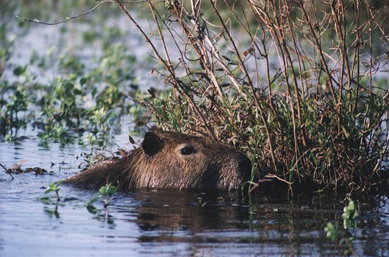

Капібара велика
Опис
Довжина тіла дорослої капібари сягає 1–1,35 м, висота в загривку — 50–60 см. Самці важать 34–63 кг, самки — 36–65,5 кг[1]. Самиці, зазвичай, більші за самців. Статура важка. Зовні капібара нагадує велетенську морську свинку. Голова велика, масивна, з широкою, тупою мордою. Верхня губа товста. Вуха короткі, округлі. Ніздрі широко розставлені. Очі маленькі, розташовані високо на голові віднесені трохи назад. Хвіст рудиментарний. Кінцівки досить короткі; передні — 4-палі (третій палець найдовший), задні — 3-палі. Пальці сполучені невеликими плавальними перетинками та забезпечені короткими сильними кігтями. Тіло вкрите довгим (30–120 мм) жорстким волоссям; підшерсток відсутній. Забарвлення верхньої сторони тіла від рудувато-бурого або сіруватого, черева, як правило, жовтувато-буре. Молодняк забарвлений світліше. Череп масивний, з широкими та сильними виличними дугами. Зубів 20. Щокові зуби без коріння, ростуть протягом всього життя тварини. Різці широкі, мають подовжню борозенку на зовнішній поверхні. Мала чи велика гомілкові кістки частково зростаються між собою. Ключиці немає.
